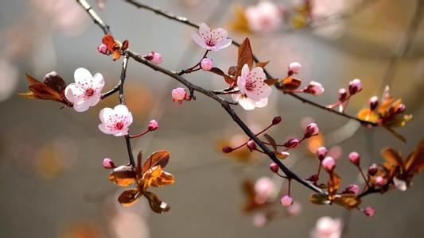
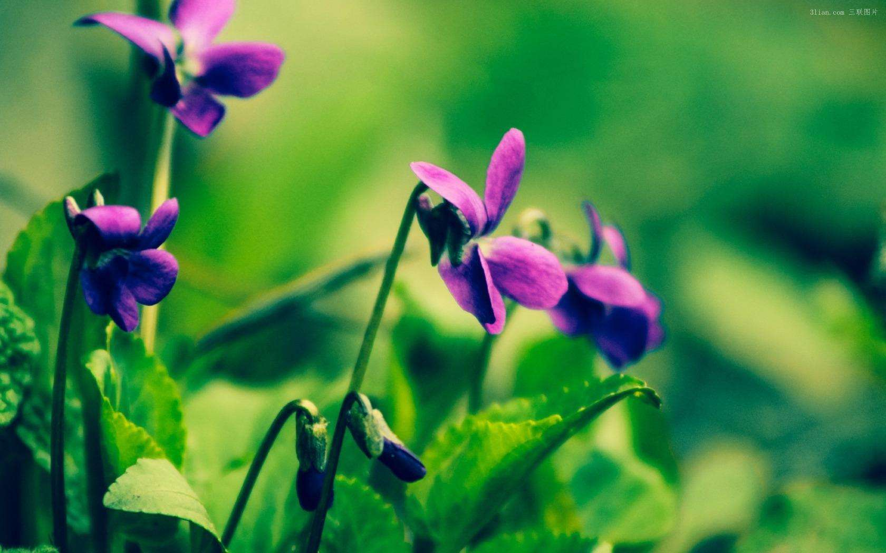

红尘陌上的花开。似比相见又恨晚的聚散，相遇过早前方的路人，便会成为身后的过客。相识过晚倾城清风的颜美。便会与你擦肩，来不及仰望。说不出再见，从此山隔一河。却天涯此岸，回眸仰望已是曾经沧海，百花残月之冬。相遇有缘，离花漂过。景色的相遇正如那份。一直落在思念里的寒冬，无论冰川怎样刺骨。雪花怎样漂过，一颗执着的心。一直苦苦寻找。天暗未明微落的天空却被大雪覆盖，热血的少年。曾经的意志，却从未止步。从春天到寒冬。从寒冬到天荒，一直守护着这份。从未揭开的思念。
红尘相遇，年华已老。岁月花开多少不在，古往今来相遇是一件既微妙。而又神圣的事情，红尘的情网中。有前者因聚散而离开，后者才因前者的离开。而深深的相遇，曾经有人说过。有缘份相遇的人。无论彼此绕开多大个圈，也会在某个不经意间。彼此依然可以重逢相遇，其实这种故事。只是说说而已。故此，却有很多人相信。从而走进缘分的刹那。
世间的感情，仅隔着一道距离。有些感情因距离而变得美好，有些美好因为距离。鼓励了彼此，才会让前进的路。充满了阳光照进了幸福。温暖了彼此，不过有时候。距离真是一把，验证感情的时光机。故此，有人因它而坚持。因为相信熬过了距离。剩下的便是春风，有人因它而离去，因为相信前方的未明。故此半路匆匆离去。
故年走远，人故未来。走过一段是相知，走过一年是相交。在生命中，有些人一起走。在年华中，有些人分开走。在相遇的渡口，有些人。走着走着就没了，有些陌生人。走着走着就在一起了，有些人我始终不知道。会在哪里相聚，又会在哪里提前离开。生命的短暂，相遇的珍惜。所以相遇就是缘，相识便是份。生命中。时间是一场盛宴，爱情是一场坚守。时间走过的雪月，是年华似水中。那一曲独听静好，爱情是一场相遇。一场落花，同样是一场聚散。人生因情而美。岁月因爱而坚守。
陌上花开，隔桌花夜。一雨芳年，相遇的竹叶。刻写着一一路走过的青苔，时光雨下。散落一地落红，那景，那月。正如初好，一丝寒风袭来。碧玉含羞的清风，凝固了月下。送走了独夜，留下了一丝静好。
年华依旧。散落曾经，你说雨中的风。是你曾经追逐的梦，而冬天的雪。是你曾经散落的花，花开有别。言过其辞。多年以后，每到雪花飘落的季节。都会想起那个曾经的画面，既唯美而又纷飞。既伤感而又无言，一场大雪。一场落花，托清风捎去了思念。托无言凝固了沧海。托花开美丽了过往，时而雨。一路一花开，一路一菩提。今生的遇见，相逢的花开。
走过一段路，总会看一些风景。停留一段时光，总会留下一些故事。其实很多时候。我们都知道每一个故事，总有一个美丽的结局。只是这个结局太过沧桑，也太过唯美，直至最后的散场，竞美得透露着忧伤。忧伤里散播着凄凉，凄凉里隐藏着无言。岁月中总有一场景，落在不经意的地方，人生中总有一场雪，漂在夜深人静的时候，一场散，一场缘。一场雪。只愿时光芬芳，落花静好。
人生的路上，总是一路走过。人生的感情总是，一路擦肩聚散。这个世间，总有人因懂你而停留，也总有人因误解而离开。对于一路走过而停留的人，我们心存感激。因为有共鸣。所以不会离开，生命的路上。红尘的渡口。总有一些人不曾深交。也不再打扰，却也一直都在不曾离开。只是时光仿佛将相遇。定格在彼岸与此岸的一角，从此隔了一个美丽的春天。
生命中一些风。一些景，总在岁月中，演奏的远去的故事，一些落叶。漂过枝头，随风飞翔，这样的季节，这样的回忆。不知道还能在岁月中展示多久，但我知道走过的路，一定会留下一些我们无法预料到的意外，预料多了也就习惯了。生命是如此。岁月便也跟着如此，走过时间的沧海。借往日那段无声的沉默，漂泊着属于自己的天涯。
流年的道别中，总有一段无法言辞的往诉。站在惜忆的尽头，数数奔赶过的黄昏，言出黄昏的每一季：静惜的落雨中，总带着这样或那样的心情，慢步独入那冰雨的清风里，感受着每一个季节带来别样的静好。
寒风吹过。陌上红尘，散落过往